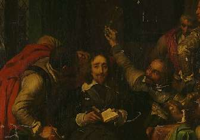
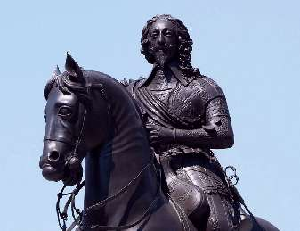

Борис Акунин
Мой календарь
Не всякое утро начинается весело, и сегодняшний рассказ печален. Но он про очень важное - про то, что никогда не поздно стать лучше, чем ты был. И что даже некрасивую историю можно завершить красиво.
Про это я думаю всякий раз, когда вспоминаю английского короля Чарльза Первого, которому 30 января 1649 года отрубили голову.
Это был очень плохой король и вполне никчемный человек. Вздорный, неумный, спесивый, наломавший кучу дров, приведший свою страну к хаосу. Наверное, парламент приговорил его к смертной казни заслуженно.
Но в последний день своей малодостойной жизни Чарльз проявил столько достоинства, что это заставляет потомков относиться к королю с уважением.
Перед казнью король надел две рубашки, сказав: «Сейчас холодное время года, и меня может бросить в дрожь. Не хочу, чтобы подумали, будто это страх. Не позволю, чтобы кому-то такое пришло в голову». На эшафоте Чарльз выразил раскаяние в том, что по слабости отдал на растерзание своего министра Страффорда. Он говорил что-то еще, но ударили барабаны. Последние слова никто не услышал, но они все равно были сказаны. Значит, Чарльзу было важно произнести их вслух.
Помолившись, король положил голову на плаху и сам подал сигнал палачу.
Политика растворяется в прошлом, а образцы красивого поведения остаются - вот что я хочу сказать. Сегодня неподалеку от места казни стоит памятник - не плохому королю, а человеку, проявившему достоинство.
Моралитэ же такое: каких бы ляпов и хреновых поступков вы в своей жизни ни совершили, никогда не поздно взять и всё исправить. Например, прямо сегодня. Тем более, надеюсь, на эшафот вас никто не тащит.